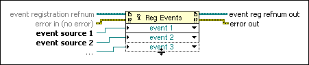

Register For Events Function
Owning Palette: Events Functions
Requires: Base Development System
Dynamically registers events. The events for which you can register depend on the type of the reference you wire to each event source input. Wire the event reg refnum out output to an Event structure or to another Register For Events function.

 Add to the block diagram Add to the block diagram |
 Find on the palette Find on the palette |